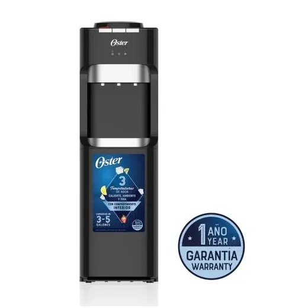

Inicio › Pequeños electrodomésticos

Oster · Modelo OSAWMC10LW
Enfriador de Aire Oster Mod. OS-AWMC10LW Capacidad de 10 L
L 3,399
En Walmart
Precio en cada tienda
| Tienda | Precio | Antes | Disponibilidad | |
|---|---|---|---|---|
| Walmart | L 3,399 | — | Disponible | Ver en tienda › |
Precios referenciales tomados de cada tienda el 28 de noviembre de 2026. El precio válido es el que muestra la tienda al comprar.
Historial de precio
Lo seguimos desde el 13 de noviembre. Precio más bajo registrado: L 3,399 en Walmart (13 de noviembre), igual que hoy. El precio no ha cambiado en ese tiempo.
Características
| Color | Blanco |
|---|---|
| Marca | Oster |
| Medida de altura | 70 cm |
| Medida de ancho | 30 cm |
| Medida de peso | 6 kg aproximadamente |
| Medida de profundidad | 35 cm |
| Modelo o serie del producto | OS AWMC10LW |
| País de Origen - Ensamblaje | China |
| Acabado | Brillante |
| Material | Plástico |
| Uso recomendado | Ideal para refrescar habitaciones, oficinas, y otros espacios |
| Voltaje | 120 V |
| Watts de potencia | 70 W |
| Tipo de tecnología de artículo | Tecnología evaporativa ecológica |
| Fabricante | Oster Products |
Descripción
El Enfriador de Aire Oster OS-AWMC10LW de 10 L ofrece una solución práctica para refrescar habitaciones medianas mediante evaporación, brindando una sensación de aire fresco y confortable en el hogar u oficina. Su tanque de 10 L permite varias horas de funcionamiento continuo, ideal para usar durante el día en dormitorios, salas, oficinas o espacios de descanso. Su diseño compacto facilita moverlo, colocarlo y almacenarlo sin ocupar demasiado espacio. Incorpora ventilador con varias velocidades y dirección de aire ajustable, permitiendo adaptar la intensidad del flujo según la temperatura del ambiente. Es una alternativa funcional para climas cálidos y rutinas diarias.
Otros pequeños electrodomésticos Oster
 Dispensador de Agua Oster Mod OS-WDMI33W Color blanco, De piso con compartimento, Soporta botellones de 3 – 5 galones.L 3,704En Walmart
Dispensador de Agua Oster Mod OS-WDMI33W Color blanco, De piso con compartimento, Soporta botellones de 3 – 5 galones.L 3,704En Walmart
Dispensador de Agua C/Gabinete NegroL 4,099En Lady Lee Plancha Sandwichera Deluxe Oster AntiadhL 2,495.01En 2 tiendas · más barato en Lady Lee
Plancha Sandwichera Deluxe Oster AntiadhL 2,495.01En 2 tiendas · más barato en Lady Lee Plancha de Asar XL NegraL 2,099En Lady Lee
Plancha de Asar XL NegraL 2,099En Lady Lee Dispensador de Agua de mesa Oster OS-WD522B Negro Soporta botellones de 3 a 5 galonesL 1,990En Walmart
Dispensador de Agua de mesa Oster OS-WD522B Negro Soporta botellones de 3 a 5 galonesL 1,990En Walmart Horno Tostador Oster Compacto 4 RebanadaL 1,989.99En Diunsa
Horno Tostador Oster Compacto 4 RebanadaL 1,989.99En Diunsa Hervidor Electrico Oster Hervido RapidoL 1,890En Diunsa
Hervidor Electrico Oster Hervido RapidoL 1,890En Diunsa Dispensador de Agua Sobremesa BlancoL 1,699En Lady Lee
Dispensador de Agua Sobremesa BlancoL 1,699En Lady Lee